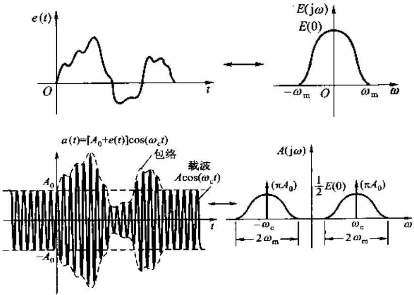
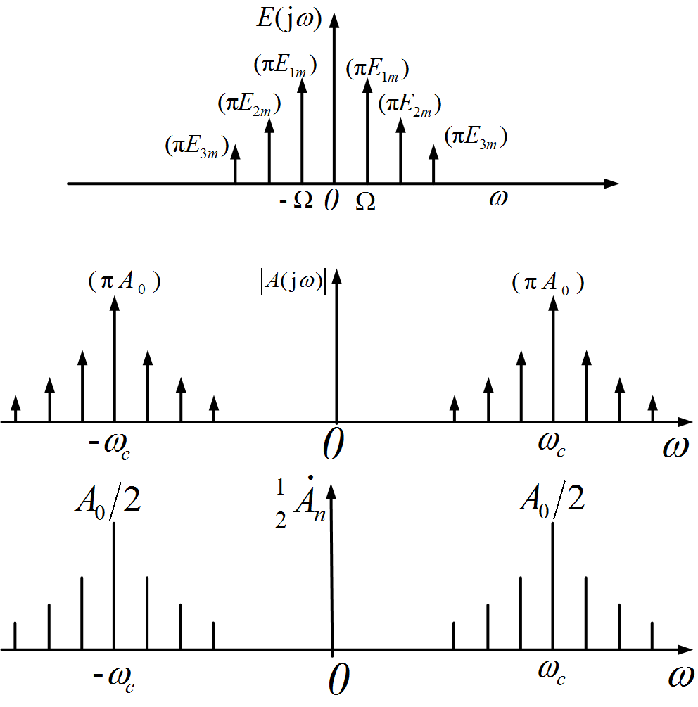
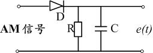
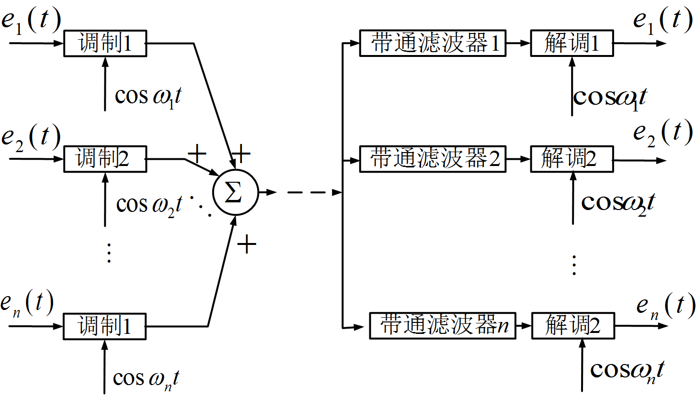
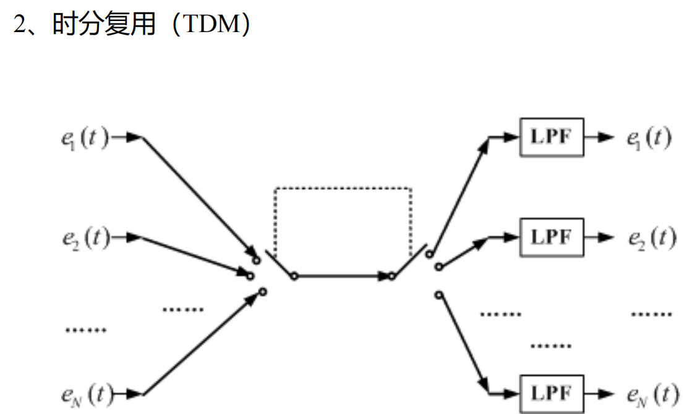

第三部分 连续时间系统变换域分析(上)
本节主要是连续时间系统的频域分析.
I. 信号在正交函数集的分解
- 单个标准信号的分解形式: f(t)=c1f1(t)+ε(t).
- 均方误差满足: ε2(t)=t2−t11∫t1t2[f(t)−c1f1(t)]2dt.
- c1=∫t1t2f1(t)f1∗(t)dt∫t1t2f(t)f1∗(t)dt, 称为相似系数.
- 多个标准信号的分解形式: f(t)=∑cifi(t).
- 若标准函数 fi,fj 是两两正交的, 则 ci=∫t1t2fi(t)fi∗(t)dt∫t1t2f(t)fi∗(t)dt.
- 标准信号基的性质:
- 归一化. ∫t1t2fi(t)fi∗(t)dt=1.
- 正交性. ∫t1t2fi(t)fj∗(t)dt=0.
- 完备性. 可用标准信号基的线性组合表示其他信号.
II. 信号表示为Fourier级数 (FS)
三角Fourier级数
- 正交函数集: {1,cosΩt,sinΩt,…,coskΩt,sinkΩt,…}.
- 其中, Ω=t2−t12π.
- 信号的展开形式: f(t)=2a0+∑n=1∞(ancosnΩt+bnsinnΩt).
- an=T2∫t1t2f(t)cosnΩtdt.
- bn=T2∫t1t2f(t)sinnΩtdt.
- an 是关于 n 的偶函数, bn 是关于 n 的奇函数.
- 另一种展开形式(利用辅助角公式): f(t)=2a0+∑n=1∞Ancos(nΩt+φn).
- An=an2+bn2.
- φn=−arctananbn.
- An 是关于 n 的偶函数, φn 是关于 n 的奇函数.
- 这种展开形式在信号分析中更为常见.
- 使用情况: 周期为 T 的信号在整个时间区间的分解. 时间区间一般取 [−2T,2T].
- 2a0: 直流分量.
- A1cos(Ωt+φ1): 基波分量.
- Ancos(nΩt+φn): n 次谐波分量.
- Gibbs现象: n→∞ 时, 信号的间断点处仍有约 9% 的误差. 但均方误差趋于0.
- 说明: Fourier级数对于含间断点的函数不是逐点收敛, 而是均方收敛.
指数Fourier级数:
- 正交函数集: {1,ejΩt,e−jΩt,…,ejkΩt,e−jkΩt,…}.
- 信号的展开形式: f(t)=∑n=−∞∞cnejnΩt.
- cn=T1∫t1t2f(t)e−jnΩtdt.
- 与三角Fourier级数的关系: cn=21A˙n=21Anejφn=2an−jbn.
Fourier级数与信号奇偶性
- 信号的奇偶性:
- 偶函数: Fourier级数仅含直流与余弦分量.
- 奇函数: Fourier级数仅含正弦分量.
- 注: 对周期信号, 平移可使奇偶性改变.
- 奇谐函数: f(t±2T)=−f(t).
- 偶谐函数: f(t±2T)=f(t).
- Fourier级数仅含偶次谐波分量.
- 最小正周期为 2T, 相当于基频由 T4π 变换为了 T2π.
III. 周期信号的频谱
- 频谱: 表述信号上各频率的系数关系.
- 幅度频谱 A(ω).
- 相位频谱 φ(ω).
- 2种频谱的形式:
- 三角Fourier级数: 单边谱.
- 指数Fourier级数: 双边谱.
- 幅度谱: ∣cn∣, 偶函数.
- 相位谱: argcn, 奇函数.
- 通常使用双边谱, 利于信号处理.
- 周期信号频谱特点:
- 离散性.
- 谐波性. 仅出现在基波频率的整数倍点上.
- 收敛性. n→∞limAn=0, n→∞limφn=0.
- 频带: 信号分量主要集中的频率区间. 有多种定义.
- 以 101Am 为限.
- 以 21Am 为限, 即 3dB 带宽.
- 以第一个过零点为限.
- 以信号总能量的 90% 为限.
IV. 非周期信号的频谱
- Fourier变换(FT): F(jω)=∫−∞+∞f(t)e−jωtdt.
- F(jω)=∣F(jω)∣ejφ(ω), 称为频谱密度函数.
- ∣F(jω)∣: 幅度, 偶函数.
- φ(ω): 相位, 奇函数.
- Fourier反变换(IFT): f(t)=2π1∫−∞+∞F(jω)ejωtdω.
- 非周期信号的频谱: 频谱密度函数 F(jω), 分为幅度谱与相位谱.
V. 常用信号频谱函数
- 门函数. f(t)=gτ(t)↔F(jω)=AτSa(2ωτ).
- Sa(x)=xsinx, 称为抽样函数.
- 单边指数信号. f(t)=e−αtε(t)↔F(jω)=α+jω1.
- 双边指数信号 f(t)=e−α∣t∣↔F(jω)=α−jω1+α+jω1=α2+ω22α.
- 冲激信号. δ(t)↔1.
- 直流信号. 1↔2πδ(ω).
- 与冲激信号对比可看出: 时域越宽, 频域越窄. 反之亦然.
- 阶跃信号. ε(t)↔πδ(ω)+jω1.
- 指数信号. ejωct↔2πδ(ω−ωc).
- 三角函数信号. 由指数信号经Euler公式可推到得到.
- cosωct↔π[δ(ω+ωc)+δ(ω−ωc)].
- sinωct↔jπ[δ(ω+ωc)−δ(ω−ωc)].
- 符号函数. sgn(t)=ε(t)−ε(−t)↔jω2.
- 三角波信号. fτ(t)↔AτSa2(2ωτ).
- 注意此处的 τ 是信号的单边宽度, 与门函数不同.
- 周期信号: 指原信号 f(t) 进行周期延拓的结果.
- fT(t)↔Ω∑n=−∞∞[F(jnΩ)δ(ω−nΩ)].
- 冲激序列. δT(t)=∑δ(t−nT)↔Ω∑δ(ω−nΩ)=ΩδΩ(ω).
- 可以由时域Fourier级数 + 指数信号的FT推导得到.
VI. Fourier变换的性质
- 线性特性. af1(t)+bf2(t)↔aF1(jω)+bF2(jω).
- 延时特性. f(t−t0)↔F(jω)e−jωt0.
- 频移特性. f(t)ejωct↔F[j(ω−ωc)].
- f(t)cosωct↔21F[j(ω−ωc)]+21F[j(ω+ωc)].
- f(t)sinωct↔2j1F[j(ω−ωc)]−2j1F[j(ω+ωc)].
- 尺度变换. f(at)↔∣a∣1F(a1jω).
- 奇偶特性. f(t)↔∫−∞+∞f(t)cosωtdt−j∫−∞+∞f(t)sinωtdt.
- 频谱函数的实部是偶函数, 虚部是奇函数.
- 若 f(t) 是偶函数, 则频谱函数是实数偶函数.
- 若 f(t) 是奇函数, 则频谱函数是纯虚数奇函数.
- 对称特性. 若 f(t)↔F(jω), 则 f(ω)↔2π1F(−jt).
- 微分特性. f′(t)↔jωF(jω), tf(t)↔jF′(jω).
- 推广: f(n)(t)↔(jω)nF(jω).
- 积分特性. ∫−∞tf(τ)dτ↔[πδ(ω)+jω1]F(jω).
- 卷积定理. f1(t)∗f2(t)↔F1(jω)F2(jω), f1(t)f2(t)↔2π1F1(jω)∗F2(jω).
VII. 能量频谱
周期信号
- 周期信号的功率: P=T1∫−2T2Tf2(t)dt=∑T1∫−2T2T[cigi(t)]2(t)dt. 其中 f(t)=∑cigi(t).
- 即Parsaval定理: 原始信号功率 = 各子信号的功率之和.
- 功率谱:
- 单边功率谱: P=(2a0)2+∑n=1∞2An2=∑n=0∞Pn.
- 双边功率谱: P=∑n=−∞+∞(2∣A˙n∣)2.
非周期信号
- 非周期信号的能量: W=∫−∞+∞f2(t)dt=∫−∞+∞∣F(j⋅2πf)∣2df.
- 即Rayleigh定理: 非周期信号在时域与频域中的能量积分相等.
- 能量谱:
- 双边能量谱: G(ω)=2π1∣F(jω)∣2.
- 单边能量谱: G(ω)=π1∣F(jω)∣2.
- 脉冲宽度与频带宽度.
- 脉冲宽度 τ: 绝大多数能量集中的时间区间. ∫t0t0+τf2(t)dt=ηW.
- 频带宽度 B: 绝大多数能量集中的频率区间. π1∫t0t0+τ∣F(jω)∣2dω=ηW.
- η∈(0,1), 是一个常数. 一般取 80%∼90%.
- 一般而言, B⋅τ=Const.
VIII. 系统响应频域分析方法
周期性信号激励响应
- 频域方程: R˙(ωi)=H(jωi)E˙(ωi).
- 求解步骤:
- 将周期信号展开为Fourier级数, 用相量表示出各频率分量.
- 求出系统的 H(p), 做Fourier变换得到 H(jω)=∣H(jω)∣ejφ(ω).
- 对各个分量进行相量叠加. 即 ri(t)=∣H(jωi)∣Aicos(ωit+φi+φ(ωi)).
- 将各个频点的响应相加得到系统的总响应.
非周期信号激励响应
- 原理: r(t)=F−1[H(jω)E(jω)].
- 其中, H(jω) 由 H(p) 做Fourier变换得到, 亦可直接利用 H(jω)=E(jω)R(jω).
IX. 理想低通滤波器的响应
- 滤波器(filter): 只允许一部分信号分量通过的系统.
- 低通滤波器(LPF).
- 高通滤波器(HPF).
- 带通滤波器(BPF).
- 带阻滤波器(BSF).
- 理想低通滤波器(ILPF):
- 频域系统函数: H(jω)=e−jωt0g2ωc0(ω).
- 冲激响应: 对 H(jω) 进行IFT得到.
- h(t)=πωc0Sa[ωc0(t−t0)].
- 在 t<t0 的部分响应不为0. 响应超前激励, 称为非因果系统(物理不可实现系统).
- 激励信号发生了失真.
- 阶跃响应: rε(t)=h(t)∗ε(t).
- rε(t)=21+π1Si[ωc0(t−t0)].
- Si(x)=∫0xSa(y)dy, 称为正弦积分函数.
- 同理, 阶跃信号下ILPF同样为非因果的, 且仍然发生失真.

X. 物理可实现系统
- 物理可实现系统(因果系统)的定义: t<0 时, h(t)=0. 即 h(t)ε(t)=h(t).
- 物理可实现的判断:
- 求解冲激响应.
- 频域分析: Paley-Wiener(佩利-维纳)准则. 若 ∣H(jω)∣ 平方可积, 则: 系统物理可实现 ⟺∫−∞+∞1+ω2∣ln∣H(jω)∣dω<∞.
- 定性判断:
- 系统幅频特性可在某些频点为0, 不可在整个频率区间为0.
- 系统频率响应的衰减速度小于指数衰减速度.
- 物理可实现的LPF: 通常在通带内起伏, 阻带内衰减.
- 最平坦的LPF: Butterworth(巴特沃斯)滤波器.
- 通带起伏型LPF: Chebyshev(切比雪夫)滤波器.

XI. 线性系统不失真条件
- 线性失真的分类:
- 幅度失真: 对各个子信号的放大或衰减程度不同.
- 相位失真: 对各个子信号的延时不同.
- 不失真的条件: 满足下述2个条件的系统, 称为非色散系统.
- 不产生幅度失真: 幅频曲线为水平直线.
- 不产生相位失真: φ(ω)=ωt0, 相频曲线为过原点的直线. (对于物理可实现系统, 相频曲线的斜率为负)
- 注: 一般仅要求在特定范围内满足不失真的条件.
XII. 调制与解调
调制
- 调制的目的: 改变信号, 使其便于发射与传输, 节约资源.
- 调制的环节:
- 载波: a0(t)=A0cos(ωct+φ0).
- 调制信号: e(t).
- 已调信号: a(t).
- A(t): 调幅(AM).
- ωc(t): 调频(FM).
- φ0(t): 调相(PM).
重点研究幅度调制.
- 形式: a(t)=[A0+ke(t)]cosωct. (k 常常取1)
- 其中, e(t) 的变化频率 ≪ωc.
- 时域上, 相当于用调制信号将载波包络. 频域上, 相当于对频谱进行搬移.

- 调制系数: m=A0max∣ke(t)∣.
- 上调制系数: ma=A0Amax−A0.
- 下调制系数: mb=A0A0−Amin.
- m=ma=mb 时, 称为对称调制.
- mb>1 时, 称为过调制. 此时包络线的形状无法与原波形相同.
- 功率:
- 载波功率: Pc=21A02.
- 最大功率: Pmax=(1+ma)2Pc.
- 瞬时功率: PT(t)=21(A0+ke(t))2.
周期信号的调幅
- 调制信号可写作: e(t)=∑nEnmcosΩnt.
- 已调信号为: a(t)=A0[1+∑mncosΩnt]cosωct.
- mn=A0Enm, 称为部分调幅系数.
- 功率:
- 载波功率: Pc=21A02.
- 边频功率: Ps=∑2mn2Pc=∑4mn2A02.
- 平均功率: Pˉ=Pc+Ps=21A02+∑4mn2A02.
- 对于一般地周期信号调幅, 常常有 Ps≪Pc, 发射机的效率较低.

其他调幅方法
- 抑制载波调幅(AM-SC).
- 已调信号为: a(t)=e(t)cosωct.
- 若存在 e(t)<0 的信号, 无法通过包络线进行检测, 只能采用同步解调方法.
- 脉冲幅度调制(PAM).
- 载波选择为周期性脉冲信号 sT(t).
- 已调信号: a(t)=e(t)sT(t).
- 时域上, 相当于对原信号进行"采样".
- 频域上, 相当于对原频谱图在每个脉冲信号的 Ω 频点进行不等幅的复制, 且幅度包络线为 Sa 函数.
- 解调方法: 针对满足 Ω>2ωm 条件的信号, 通过一低通滤波器即可.

解调
- 包络检波法: 利用已调信号的包络线求解出原信号.
- 要求: AM信号, 无过调制. (即 mb≤1)
- 结构: 通常由半波或全波整流器和低通滤波器组成.

- 同步解调法: 对已调信号乘以相同频率(且相同相位)的余弦信号, 随后通过低通滤波器.
- "同步"的意义: 频率与相位均相同.
- 解调后与原信号的差异: 多出了直流分量, 且幅度为原来的一半.

XIII. 频分复用与时分复用
- 目的: 增加系统的传输效率.
- 频分复用(FDM):

- ωi=iT2π 时, 各频率分量正交, 称为正交频分复用. 此时, 无需使用带通滤波器.
- 时分复用(TDM):
